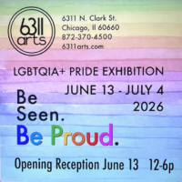

Be Seen, Be Proud
Edgewater’s community arts center 6311arts will present Be Seen, Be Proud, a group exhibition celebrating Chicago Pride through the work of local artists across a range of media and perspectives.
Opening Saturday, June 13, with a reception and drag show from 12–6 p.m., the exhibition will feature painting, photography and collage by Chicago-area artists exploring Pride in all its forms — joyful and celebratory, deeply personal, politically engaged, and unapologetically visible.
Be Seen, Be Proud highlights the diversity and creative energy of Chicago’s LGBTQ+ community while creating space for reflection, connection, and dialogue during Pride Month.
The exhibition reflects 6311arts’ ongoing mission to create an approachable, neighborhood-centered arts space where artists and audiences of all backgrounds can gather and engage with contemporary work in an inclusive environment.
“We want this exhibition to reflect the many ways Pride is lived and experienced throughout Chicago,” said Holly King of 6311arts. “There is room here for celebration, resistance, vulnerability, joy, and experimentation.”
Visitors to the opening reception will have the opportunity to meet participating artists, connect with fellow community members, and experience a wide range of contemporary work from across Chicago’s creative landscape.